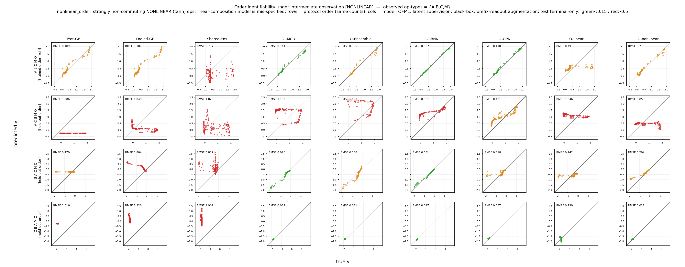

主張 1 · 中間観測は識別可能性の限界を修復する
非線形 order ストレス下でも、学習時の中間観測は合成 OFML の識別限界を実際に修復する。観測なし（\(\varnothing\)）では 4 つの合成 OFML はいずれも per-proto NRMSE ≈0.44–0.65 にとどまるが、完全観測 \(\{A,B,C,M\}\) を学習時に与えると ≈0.17–0.36 まで低下する。決定的なのは、この改善の大半が単一の操作型を観測するだけで得られること（＝完全観測は不要）、そして count 記述子のブラックボックスと誤特定された線形合成は同じ観測を得てもまったく改善しないことである。この 3 つの非対称性が、中間観測が合成的に操作を表現できる代理モデルにのみ効く識別信号であることを示す。

nonlinear_order）中間観測アブレーション。行＝ホールドアウト order、列＝モデル、横軸に観測サブセット \(S\subseteq\{A,B,C,M\}\)（全 \(2^4=16\) 通り）。count 記述子ベースライン（Shared-Ens / Pooled-GP）は横ばい、合成 OFML は \(\varnothing\to\) 観測で単調に改善し、改善の大半は単一操作型の観測で達成される。クリックで拡大。このページは主張 1「中間観測は識別可能性の限界を修復する」を、非線形意味論の order タスクで支える。学習時に中間状態を記録すると、端末観測のみでは欠けている識別信号を供給できる — ただしこれが効くのは操作を合成的に表現できる代理モデルのみであり、count 記述子のブラックボックスにも、真の写像を表現できない誤特定線形にも不活性である。図 8 は、図 7（線形 order）で確立した観測効果が非線形意味論下でも成立すること、さらに端末のみでは識別できなかった order 構造が最小限（単一操作型）の中間観測で大きく回復すること（完全観測は不要）を示す。
図 3b の order 設計を、各観測サブセット \(S\subseteq\{A,B,C,M\}\)（全 \(2^4=16\) 通り）の下で非線形意味論 nonlinear_order で再実行する。中間観測は学習時のみ使用し、評価は端末のみで行う（試料を変えない非破壊測定の類似）。報告は traceablation2 プロトコルによる。source 12 プロトコル・target ホールドアウト order 3 本、観測ノイズ \(\sigma=0.02\)。指標はホールドアウト order 平均の per-proto NRMSE（3 ホールドアウト order × 3 seed 平均、16 サブセットを掃引）で、観測なし \(\varnothing\) から完全観測 \(\{A,B,C,M\}\) までを比較する。表 3 は両端 \(\varnothing\) と全観測を要約し、本文で単一操作型の効果を注記する。
※ 前版からの是正：(1) NRMSE 化 — 各 target を自スケール（単位 y-std）へ正規化。本図の trace-ablation は元データが per-proto RMSE のため「RMSE（＝NRMSE 近似）」に相当し、値はそのまま NRMSE として解釈できる。(2) 誤特定線形の追加 — 非線形真値に対しミスマッチの OFML-linear を対照に加え、観測が「表現力のある代理にのみ効く」ことを露出させる。(3) 不確実性バックボーンの掃引 — 合成の骨格を共有したまま BNN / GP 出力層 / MC-Dropout / 決定論的点推定の 4 変種で頑健性を確認。
| モデル | 構造 | 不確実性／表現 | 種別 |
|---|---|---|---|
OFML-BNN | 合成ネット＋ベイズ NN（重み事後、変分近似） | 変分事後による予測分散 | 合成（非線形） |
OFML-GPN | 合成ネット＋GP 出力層（deep kernel） | GP 事後分散 | 合成（非線形） |
OFML-MCD | 合成ネット＋MC-Dropout | ドロップアウト標本分散 | 合成（非線形） |
OFML-nonlinear | 合成ネット（決定論的・点推定） | 点推定（分散なし） | 合成（非線形） |
Shared-Ens | 操作 count 記述子上の深層アンサンブル（順序盲） | アンサンブル分散 | ブラックボックス |
Pooled-GP | count 記述子上の pooled GP（順序盲） | GP 事後分散 | ブラックボックス |
OFML-linear | 線形合成（非線形真値に対しミスマッチ） | 点推定 | 誤特定（合成だが表現力不足） |
指標はホールドアウト order 平均の per-proto 誤差。各 target を自スケール \(s_p\)（単位 y-std）で正規化すると NRMSE になり、\[ \overline{\NRMSE}(S)=\frac1{|\Pcal_{\mathrm{ho}}|}\sum_{p\in\Pcal_{\mathrm{ho}}}\frac{\sqrt{\mathrm{mean}_x\,(\mu_p(x)-f_p(x))^2}}{s_p}\ \approx\ \frac1{|\Pcal_{\mathrm{ho}}|}\sum_{p\in\Pcal_{\mathrm{ho}}}\RMSE_p(S), \] ここで \(\Pcal_{\mathrm{ho}}\) はホールドアウト order 集合（\(|\Pcal_{\mathrm{ho}}|=3\)）、\(\mu_p\) は端末予測、\(f_p\) は真値。本図の trace-ablation は元データが per-proto RMSE のため「RMSE（＝NRMSE 近似）」と表記するが、各 target は単位 y-std に正規化済みで NRMSE と一致する。
中間観測は、被観測操作型 op ∈ S（S ⊆ {A,B,C,M}）の位置に観測器モジュール O_op を置き、その出力を学習時のみ観測して実現する。O_op が観測するのはその操作を適用した直後の真の 2 次元状態 state*_op = s_v† = F_op†(z_v†)（post-op・ノイズなし）— すなわち O_A は「A 適用直後の (s₀,s₁)」、O_M は「M 適用直後の状態」を観測する。D はこれらのプロトコルに現れず、端末観測器 O は既に端末で観測済みなので S には含めない。
OFML 側（合成モデル）：各被観測操作型に操作型ごとに別々の学習可能な観測器 O_op : ℝᵈ→ℝ²（バイアスなし線形）を付け、補助損失 Σ_{op∈S} ‖O_op(s_op) − state*_op‖² を端末損失に加える（d=2 なら 2×2 整列、d>2 なら d→2 射影）。共有 1 枚の整列にしないのは、そのゲージ自由度（縮小的/拡大的実現の非識別）を除去し count C^k 発散を抑えるためである。
並列・非破壊の側枝：合成の本流は潜在 s ← g_θ_op(s) を d 次元のまま伝播し、下流操作（例: B）は前段（例: A）の潜在 s そのものを受け取る。O_op(s) はその時点の潜在を 2 次元へ写す並列の読み出しヘッドにすぎず、補助損失を与えるだけで s を書き換えない。したがって O_A は B に接続されず、観測を入れても順伝播グラフと合成は不変で、観測は潜在への追加の勾配制約としてのみ作用する（試料を変えない非破壊測定の類似）。d>2 のモデルでは潜在が観測 2 次元より多くの情報を保持し、O_op はその d→2 射影を学習する。
ブラックボックス側は観測器を持たない：付随させる潜在モジュールがないため、prefix-readout 拡張で同じ情報を与える — 各被観測位置 t について、接頭辞プロトコル op₁ … op_t O の端末 readout をスカラー y = readout(state*_after_t) として観測する訓練行を追加する。よって O_A, O_B, O_C, O_M は OFML 専用であり、ブラックボックスは接頭辞のスカラー読み出しのみを受け取る。
図 8 は order タスクの非線形版（nonlinear_order）。source 12・target ホールドアウト order 3 本。観測部分集合 S ⊆ {A,B,C,M} を学習時のみ観測（評価は端末のみ）。
| 要素 | 値 | 性質 |
|---|---|---|
| source 学習 | 12 プロトコル（order source） | 非線形意味論・ノイズ有 \(\sigma=0.02\) |
| target | 3 ホールドアウト order | 端末のみ評価（真値） |
| 観測サブセット | \(S\subseteq\{A,B,C,M\}\)（16 通り） | 学習時のみ・非破壊側枝 |
| 反復 | 3 seed × 3 ホールドアウト order | per-proto NRMSE を平均 |
| 意味論 | nonlinear_order（tanh 押し潰し） | 非可換・プロトコルごと線形-R²≈0.4 |
OFML-linear は誤特定される。モジュール型にカーソルを合わせると、共有される同一操作が全プロトコルで強調される（＝重み共有）。同数・異順序のホールドアウト order が「順序を見ないと区別できない」ことを可視化する。
合成 OFML は観測で大きく改善する。 \(\varnothing\to\) 全観測 \(\{A,B,C,M\}\) で OFML-BNN 0.652→0.171、OFML-GPN 0.578→0.242、OFML-nonlinear 0.466→0.326、OFML-MCD 0.443→0.364。最良は OFML-BNN（0.171）で、線形版の到達水準（図 7 の ≈0.10）に迫る。アブレーション曲線（図 8）が示すとおり、この低下の大半は単一操作型の観測で既に達成され、完全観測 \(\{A,B,C,M\}\) は限界的な追加分しか与えない（＝完全観測は不要）。count 記述子は横ばい。 ブラックボックスの Shared-Ens（1.130→1.141）・Pooled-GP（0.972→0.990）は同じ観測を得ても 1.0 前後で変化せず、むしろ微増する。誤特定線形はほぼ恩恵なし。 非線形真値に対しミスマッチの OFML-linear は 0.494→0.529 と、観測を与えてもわずかに悪化する。
| モデル | \(\varnothing\)（観測なし） | 全観測 \(\{A,B,C,M\}\) |
|---|---|---|
OFML-BNN | 0.652 | 0.171 |
OFML-GPN | 0.578 | 0.242 |
OFML-nonlinear | 0.466 | 0.326 |
OFML-MCD | 0.443 | 0.364 |
Shared-Ens（ブラックボックス） | 1.130 | 1.141 |
Pooled-GP（ブラックボックス） | 0.972 | 0.990 |
OFML-linear（誤特定） | 0.494 | 0.529 |
合成 OFML では全観測列が最良（観測が誤差を下げる）。ブラックボックスと誤特定線形では \(\varnothing\) 列が最良（観測が効かず、微増する）— この向きの反転が「誰が観測から恩恵を受けるか」を一目で示す。
この結果は主張 1 を3 つの誠実な非対称性によって裏付ける。(i) count 記述子のブラックボックス（Shared-Ens / Pooled-GP）は同一の観測を得ても 1.0 前後にとどまる — order は count 特徴で表現できないため、観測を与えても識別が進まない。(ii) 非線形操作上の誤特定された OFML-linear はほぼ恩恵を受けない（0.494→0.529）— 観測が助けるのは、演算子が真の写像を表現できる代理モデルのみである。(iii) 4 つの合成 OFML はいずれも大きく改善し、しかも改善の大半が単一操作型の観測で達成される（完全観測は不要）。すなわち中間観測は万能薬ではなく、モデルが操作を合成的に表現できるときにのみ識別信号として機能し、そのときは最小限の観測で足りる。
単一操作型で十分という事実が理論と直結する：ホールドアウト order の識別を支配するのは bridge 係数 \(\Lambda_{p_\star,q}\) の主要因であり、これを一点抑えれば残りは合成構造が補間する。したがって全 \(\{A,B,C,M\}\) を観測しなくても大半が回復する。ただし非線形 order は部分的にしか識別されない：最良でも NRMSE ≈0.17（OFML-BNN）であって、線形の ≈0.10（図 7）には届かず、点推定の OFML-MCD/OFML-nonlinear は ≈0.33–0.36 に残差が残る。単一操作型スナップショットは非可換構造の主要因を回復するが全部ではない — これは誠実な残差限界である。
order の順方向転移そのものは 図 3b（order）、線形版の観測効果は 図 7（線形 order）を参照。
※ 限界：値は per-proto RMSE（各 target を単位 y-std に正規化した NRMSE 近似）で、16 サブセット × 3 seed × 3 ホールドアウト order の平均。表 3 は両端 \(\varnothing\)／全観測のみを示し、SE 帯・単一操作型サブセットの内訳は図 8 のアブレーション曲線に委ねる。OFML-linear の微増と count 記述子の微増は seed ノイズ程度で、いずれも「観測が効かない」ことの表れである。中間観測は学習時のみで、評価は端末のみ（非破壊）。